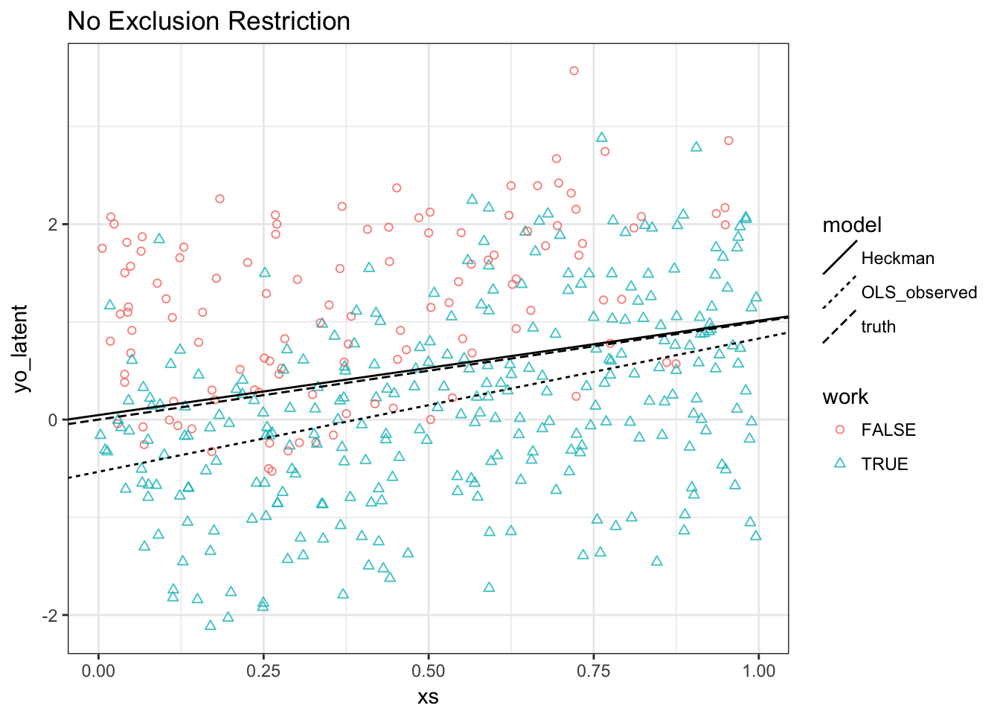
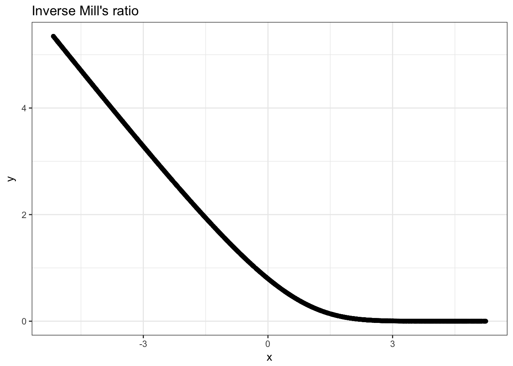
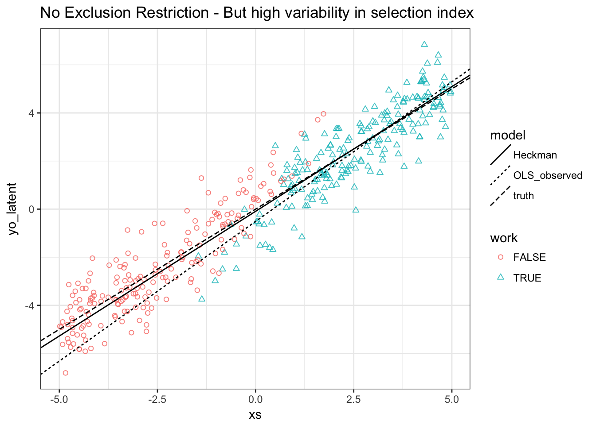

Selection Lab
In this lab we will study estimation of the Heckman Selection Model. Much of this will be based on the vignette of the sampleSelection package.
Setup
Just to remind ourselves to last week’s class, we are dealing with two latent processes that can be written as follows, where \(o\) is for outcome and \(s\) is for selection:
\[\begin{align} y_i^s &= \begin{cases} 0 & \text{if }\beta^s x_i^s + \varepsilon_i^s < 0 \\ 1 & \text{else.} \end{cases} \\ y_i^o &= \begin{cases} 0 & \text{if }y_i^s = 0 \\ \beta^o x_i^o + \varepsilon_i^o & \text{else.} \end{cases} \end{align}\]
This means that we only observe outcome \(y_i^o\) if \(i\) was selected into the sample via \(\beta^s x_i^s + \varepsilon_i^s > 0\). Our population regression function looks like
\[ E[y^o | x^o,x^s,y^s=1] = \beta^o x^o + E[\varepsilon^o | \varepsilon^s \geq - \beta^s x^s] \]
which is biased if \(E[\varepsilon^o | \varepsilon^s \geq - \beta^s x^s] \neq 0\). Notice that \(E[\varepsilon^o | \varepsilon^s \geq - \beta^s x^s]\) is often called the control function.
Joint Normality of Errors
We proceed by assuming joint normality:
\[\begin{equation} \left[ \begin{array}{c} \varepsilon^s \\ \varepsilon^o \end{array} \right] \sim N \left( \left[ \begin{array}{c} 0 \\ 0 \end{array} \right] , \left[ \begin{array}{cc} 1 & \rho \\ \rho & \sigma^2 \end{array} \right]\right) \end{equation}\]
Notice that we impose the scale normalization that \(Var(\varepsilon^s) = 1\). With this assumption, we can then proceed to estimate the selection equation by probit, and evaluate the obtained coefficients \(\beta_s\) in the inverse mills ratio as follows:
\[ y_i^o = \beta^o x_i^o + E[\varepsilon^o | \varepsilon_i^s \geq - \beta^s x_i^s] + \eta_i \equiv \beta^o x_i^o + \rho \sigma \lambda(\beta^s x_i^s) + \eta_i \] where \(E[\eta|x^o,x^s]=0\) and \(\lambda(\cdot) = \frac{\phi(\cdot)}{\Phi(\cdot)}\) is the inverse mills ratio.
Synthetic Data
Let’s generate a data set with \(\beta_0^j=0,\beta_1^j=1,j=s,o\) i.e. all intercepts zero and a single regressor in each equation with slope 1 and with a valid exclusion restriction:
n = 2000
eps <- rmvnorm(n, c(0,0), matrix(c(1,-0.7,-0.7,1), 2, 2))
xs <- runif(n)
ys <- xs + eps[,1] > 0
xo <- runif(n)
yoX <- xo + eps[,2] # exclusion: use xo, not xs!
yo <- yoX*(ys > 0)
# quick check
m = selection(ys ~ xs, yo ~ xo)
summary(m)## --------------------------------------------
## Tobit 2 model (sample selection model)
## Maximum Likelihood estimation
## Newton-Raphson maximisation, 3 iterations
## Return code 2: successive function values within tolerance limit
## Log-Likelihood: -2929.434
## 2000 observations (634 censored and 1366 observed)
## 6 free parameters (df = 1994)
## Probit selection equation:
## Estimate Std. Error t value Pr(>|t|)
## (Intercept) -0.01460 0.05226 -0.279 0.78
## xs 1.03058 0.09437 10.920 <2e-16 ***
## Outcome equation:
## Estimate Std. Error t value Pr(>|t|)
## (Intercept) 0.04622 0.06139 0.753 0.452
## xo 0.96638 0.08071 11.974 <2e-16 ***
## Error terms:
## Estimate Std. Error t value Pr(>|t|)
## sigma 1.00448 0.03580 28.05 <2e-16 ***
## rho -0.73022 0.05669 -12.88 <2e-16 ***
## ---
## Signif. codes: 0 '***' 0.001 '**' 0.01 '*' 0.05 '.' 0.1 ' ' 1
## --------------------------------------------Results:
- Estimates look correct (there is of course small sample bias)
- intercepts are zero
- slopes are 1
- \(\sigma^2=1\)
- \(\rho = -0.7\)
Task 1. Make a plot that looks like this:

We see that
- Observed outcomes are lower than unobserved ones (result of \(\rho <1\))
- OLS intercept is downward biased
- OLS slope is unbiased because \(E[\varepsilon^o | \varepsilon^s \geq - \beta^s x^s]\) is independent of \(x^o\)
Inverse Mills Ratio
Let us investigate the inverse mills ratio a bit now. We know that in theory, it should be a convex function that becomes linear at high values of the index.
Task 2. Plot the inverse mills ratio!

And in our data?
Task 3. Add our data values for \(\lambda\) to your previous plot.

So we can see that the values of our single index for selection \(\beta^s x^s\) falls well within the range where \(\lambda\) is nonlinear in this case.
No Exclusion Restriction
We could rely on functional form identification only. Let’s try this: just regenerate the data without exclusion restriction.
yoX <- xs + eps[,2] # no exclusion restriction! xs both in selection and outcome!
yo <- yoX*(ys > 0)
m2 = selection(ys ~ xs, yo ~ xs)
summary(m2)## --------------------------------------------
## Tobit 2 model (sample selection model)
## Maximum Likelihood estimation
## Newton-Raphson maximisation, 5 iterations
## Return code 1: gradient close to zero
## Log-Likelihood: -2929.52
## 2000 observations (634 censored and 1366 observed)
## 6 free parameters (df = 1994)
## Probit selection equation:
## Estimate Std. Error t value Pr(>|t|)
## (Intercept) -0.01535 0.05633 -0.273 0.785
## xs 1.03204 0.10270 10.049 <2e-16 ***
## Outcome equation:
## Estimate Std. Error t value Pr(>|t|)
## (Intercept) 0.03285 0.08625 0.381 0.703
## xs 0.99634 0.09910 10.054 <2e-16 ***
## Error terms:
## Estimate Std. Error t value Pr(>|t|)
## sigma 1.00575 0.03911 25.71 <2e-16 ***
## rho -0.73237 0.06203 -11.81 <2e-16 ***
## ---
## Signif. codes: 0 '***' 0.001 '**' 0.01 '*' 0.05 '.' 0.1 ' ' 1
## --------------------------------------------We are still unbiased! This is a result of the \(\lambda\) being non-linear in our case. But we have larger standard errors.
Task 4. Redo our previous plot:

Results:
- Heckman MLE does still well
- OLS is biased for both slope and intercept: Slope as well this time because \(E[\varepsilon^o | \varepsilon^s \geq - \beta^s x^s]\) is increasing in \(x^s\) (and \(x^s=x^o\))
Standard Errors
- The precision in the last estimation was smaller because we lost identifying power from independent variation in \(x^s\), i.e. we had no exclusion restriction.
- If we could increase the variation in \(x^s \beta^s\), we could regain some of that power.
Task 5. Recreate our initial dataset without an exclusion restriction and re-run our selection model.
## --------------------------------------------
## Tobit 2 model (sample selection model)
## Maximum Likelihood estimation
## Newton-Raphson maximisation, 5 iterations
## Return code 1: gradient close to zero
## Log-Likelihood: -1697.967
## 2000 observations (993 censored and 1007 observed)
## 6 free parameters (df = 1994)
## Probit selection equation:
## Estimate Std. Error t value Pr(>|t|)
## (Intercept) 0.03290 0.05337 0.616 0.538
## xs 1.04249 0.04719 22.089 <2e-16 ***
## Outcome equation:
## Estimate Std. Error t value Pr(>|t|)
## (Intercept) -0.09054 0.07100 -1.275 0.202
## xs 1.03690 0.02347 44.184 <2e-16 ***
## Error terms:
## Estimate Std. Error t value Pr(>|t|)
## sigma 0.96664 0.02345 41.23 <2e-16 ***
## rho -0.69351 0.06665 -10.40 <2e-16 ***
## ---
## Signif. codes: 0 '***' 0.001 '**' 0.01 '*' 0.05 '.' 0.1 ' ' 1
## --------------------------------------------We can see that the standard errors got much smaller because of this. re-doing our plot of the inverse mills ratio values implied by our dataset:
df$xsbeta = coef(m)[1] + coef(m)[2]*xs
mi2 <- mi + geom_point(aes(x=xsbeta,y=mills(xsbeta)),data=df)
mi2
Also in terms of severity of selection, this issue is much differnt. To see this:
Task 6. Redo your plot from Task 3.

Real Data
## lfp hours kids5 kids618 age educ wage repwage hushrs husage huseduc
## 1 1 1610 1 0 32 12 3.3540 2.65 2708 34 12
## 2 1 1656 0 2 30 12 1.3889 2.65 2310 30 9
## 3 1 1980 1 3 35 12 4.5455 4.04 3072 40 12
## 4 1 456 0 3 34 12 1.0965 3.25 1920 53 10
## 5 1 1568 1 2 31 14 4.5918 3.60 2000 32 12
## 6 1 2032 0 0 54 12 4.7421 4.70 1040 57 11
## huswage faminc mtr motheduc fatheduc unem city exper nwifeinc
## 1 4.0288 16310 0.7215 12 7 5.0 0 14 10.910060
## 2 8.4416 21800 0.6615 7 7 11.0 1 5 19.499981
## 3 3.5807 21040 0.6915 12 7 5.0 0 15 12.039910
## 4 3.5417 7300 0.7815 7 7 5.0 0 6 6.799996
## 5 10.0000 27300 0.6215 12 14 9.5 1 7 20.100058
## 6 6.7106 19495 0.6915 14 7 7.5 1 33 9.859054
## wifecoll huscoll kids
## 1 FALSE FALSE TRUE
## 2 FALSE FALSE TRUE
## 3 FALSE FALSE TRUE
## 4 FALSE FALSE TRUE
## 5 TRUE FALSE TRUE
## 6 FALSE FALSE FALSEgreeneTS <- heckit(selection = lfp ~ age + I(age^2) + faminc + kids + educ,outcome= wage ~ exper + I(exper^2) + educ + city, data = Mroz87)
greeneML <- selection(lfp ~ age + I(age^2) + faminc + kids + educ,wage ~ exper + I(exper^2) + educ + city, data = Mroz87,maxMethod = "BHHH", iterlim = 500)
summary(greeneTS)## --------------------------------------------
## Tobit 2 model (sample selection model)
## 2-step Heckman / heckit estimation
## 753 observations (325 censored and 428 observed)
## 14 free parameters (df = 740)
## Probit selection equation:
## Estimate Std. Error t value Pr(>|t|)
## (Intercept) -4.157e+00 1.402e+00 -2.965 0.003127 **
## age 1.854e-01 6.597e-02 2.810 0.005078 **
## I(age^2) -2.426e-03 7.735e-04 -3.136 0.001780 **
## faminc 4.580e-06 4.206e-06 1.089 0.276544
## kidsTRUE -4.490e-01 1.309e-01 -3.430 0.000638 ***
## educ 9.818e-02 2.298e-02 4.272 2.19e-05 ***
## Outcome equation:
## Estimate Std. Error t value Pr(>|t|)
## (Intercept) -0.9712003 2.0593505 -0.472 0.637
## exper 0.0210610 0.0624646 0.337 0.736
## I(exper^2) 0.0001371 0.0018782 0.073 0.942
## educ 0.4170174 0.1002497 4.160 3.56e-05 ***
## city 0.4438379 0.3158984 1.405 0.160
## Multiple R-Squared:0.1264, Adjusted R-Squared:0.116
## Error terms:
## Estimate Std. Error t value Pr(>|t|)
## invMillsRatio -1.098 1.266 -0.867 0.386
## sigma 3.200 NA NA NA
## rho -0.343 NA NA NA
## --------------------------------------------## --------------------------------------------
## Tobit 2 model (sample selection model)
## Maximum Likelihood estimation
## BHHH maximisation, 62 iterations
## Return code 2: successive function values within tolerance limit
## Log-Likelihood: -1581.259
## 753 observations (325 censored and 428 observed)
## 13 free parameters (df = 740)
## Probit selection equation:
## Estimate Std. Error t value Pr(>|t|)
## (Intercept) -4.120e+00 1.410e+00 -2.921 0.00359 **
## age 1.840e-01 6.584e-02 2.795 0.00532 **
## I(age^2) -2.409e-03 7.735e-04 -3.115 0.00191 **
## faminc 5.676e-06 3.890e-06 1.459 0.14493
## kidsTRUE -4.507e-01 1.367e-01 -3.298 0.00102 **
## educ 9.533e-02 2.400e-02 3.973 7.8e-05 ***
## Outcome equation:
## Estimate Std. Error t value Pr(>|t|)
## (Intercept) -1.9537242 1.6745690 -1.167 0.244
## exper 0.0284295 0.0753989 0.377 0.706
## I(exper^2) -0.0001151 0.0023339 -0.049 0.961
## educ 0.4562471 0.0959626 4.754 2.39e-06 ***
## city 0.4451424 0.4255420 1.046 0.296
## Error terms:
## Estimate Std. Error t value Pr(>|t|)
## sigma 3.10350 0.08368 37.088 <2e-16 ***
## rho -0.13328 0.22296 -0.598 0.55
## ---
## Signif. codes: 0 '***' 0.001 '**' 0.01 '*' 0.05 '.' 0.1 ' ' 1
## --------------------------------------------Role of Joint Normality Assumption
We have in general for selected observations:
\[ y_i^o = \beta^o x_i^o + g(\beta^s x^s) + u_i^o \]
i.e. if we don’t want to make the joint normality assumption, we just need a way to handle this function \(g\). In this case, an exclusion restriction is indepensable, because we do not know the shape of \(g\), hence cannot rely on nonlinearities.
Robinson’s solution
A semiparametric solution to this problem is to realize that, by taking expectations on the previous equation, one gets
\[ E[y_i^o|\beta^s x^s] = \beta^o E[x_i^o |\beta^s x^s] + g(\beta^s x^s) \] The Robinson (1988) solution is to just substract the latter from the former to get
\[ y_i^o - E[y_i^o|\beta^s x^s] = \beta^o [x_i^o - E[x_i^o |\beta^s x^s] ] + u_i^o \]
The idea is then to replace \(E[y_i^o|\beta^s x^s]\) and \(E[x_i^o|\beta^s x^s]\) by non-parametric kernel estimates, and estimate \(\beta^o\) in this way.